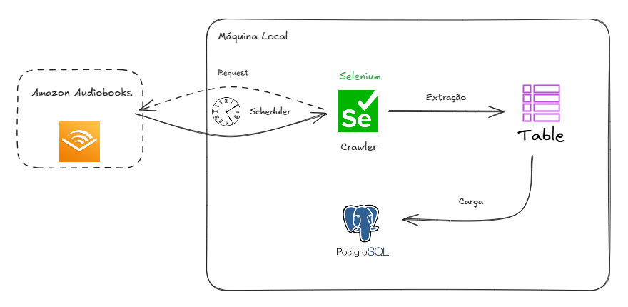

Sou Daniel Iglesias, engenheiro de dados com atuação no setor de varejo, apaixonado por tecnologia, machine learning e soluções que geram impacto real no negócio. Tenho experiência com previsão de demanda, análise de sortimento, clusterização de clientes, e aplicações em cloud computing com AWS. Gosto de construir projetos de ponta a ponta — desde a coleta e tratamento de dados até a visualização de resultados. No tempo livre, curto jogar futebol, surfar e passar um tempo com a família.
Ferramentas
- Briefer
- Docker
- Git
- Power BI
- Databricks
Cloud (AWS)
- EMR
- EC2
- Glue
- Athena
- S3
- IAM
- Lake Formation
- ...
Cientista de Dados Full Stack
Agosto 2023 - Atualmente
- Conduzi projetos de Otimização e balanceamento de estoque, precificação e gestão de portfólio de produtos para direcionar decisões táticas e estratégicas de negócio, a partir de análises estatísticas e aprendizado de máquina usando Python.
- Criei scripts em Python para extração de dados de e-commerce (Mercado Livre, Amazon).
- Criação e gerenciamento de tabelas em bancos de dados OracleSQL, incluindo a modelagem e normalização de dados.
- Manipulação de dados utilizando bibliotecas Python, como Pandas e Spark, e transformação de dados em Data Warehouses com SQL.
- Documentei processos através de ferramenta de versionamento de código utilizando Git e Github.
- Construí indicadores chave do negócio e montei acompanhamento através de ferramentas como Power BI e OracleSQL
Analista de Dados
Julho 2022 - Agosto 2023
- Construí de Data Lakehouse usando arquitetura medalhão em AWS, usando S3, Glue e Athena.
- Criei análises de mercado através de ingestão de dados via API e EDA georeferenciada usando Folium, Seaborn, e Matplotlib.
- Montei ETLs em AWS usando pySpark e Glue
Projetos de Engenharia de Dados
ETL em Lakehouse em AWS

Objetivos
- O objetivo deste projeto é construir, a partir de dados brutos simples, um pipeline ETL completo na nuvem. Meu objetivo é explorar os benefícios da Arquitetura Medallion em um contexto corporativo, onde preciso fornecer uma forma simples e direta de acesso às informações centrais do negócio, sem perder a flexibilidade para futuras mudanças de contexto.
Resultados
- Os dados são S3, catalogados pelo AWS Glue Crawler e Glue Data Catalog, e transformados usando scripts ETL com PySpark. Por fim, aplico consultas SQL com o Glue Studio para gerar a camada Gold. Todo o fluxo é orquestrado com Step Functions, garantindo que cada etapa ocorra na ordem correta. No final, os dados podem ser consultados via Amazon Athena, usando as tabelas criadas no Glue.
Tecnologias e linguagens utilizadas
- AWS S3, Glue (ETL, Crawler, Data Catalog e Data Quality), IAM, Step Functions, SNS, Athena, Python, Spark
Projeto completo em meu GitHub: GitHub
Web Scrapping Amazon

Objetivos
- No mercado de varejo, é crucial a coleta de informações de preço de concorrentes. Nesse quesito, web crawlers representam papel fundamental na extração de preços e insights. Por isso, Criei um crawler capaz de navegar e extrair informações de sites de concorrentes de forma autônoma e rápida.
Resultados
- Este projeto criou um fluxo capaz de automatizar o processo de extração e carregamento de preços de concorrentes em banco de dados relacional PostgreSQL
Tecnologias e linguagens utilizadas
- Python: BeautifulSoup, Requests, Selenium. SQL: PostgreSQL
Projeto completo em meu GitHub: GitHub
Entre em contato comigo por meio de:
{kind=link}